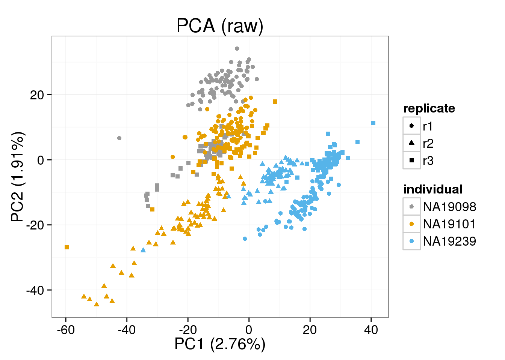
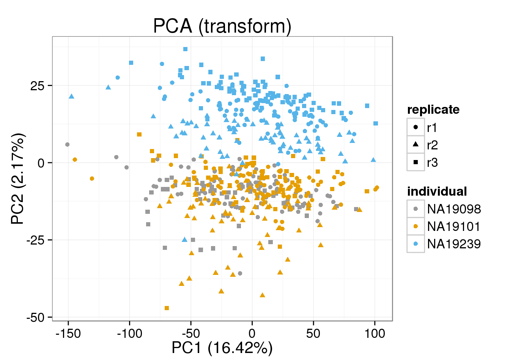
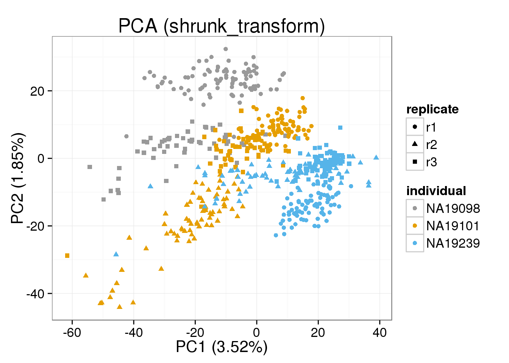
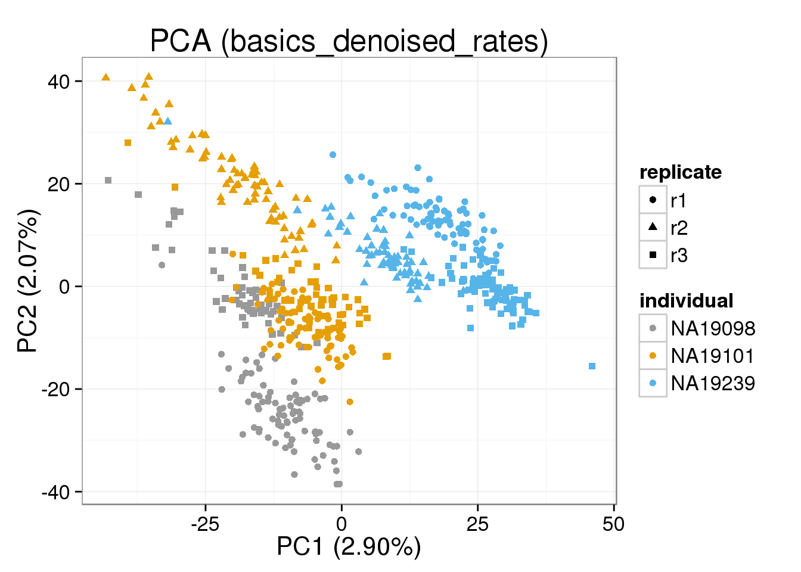
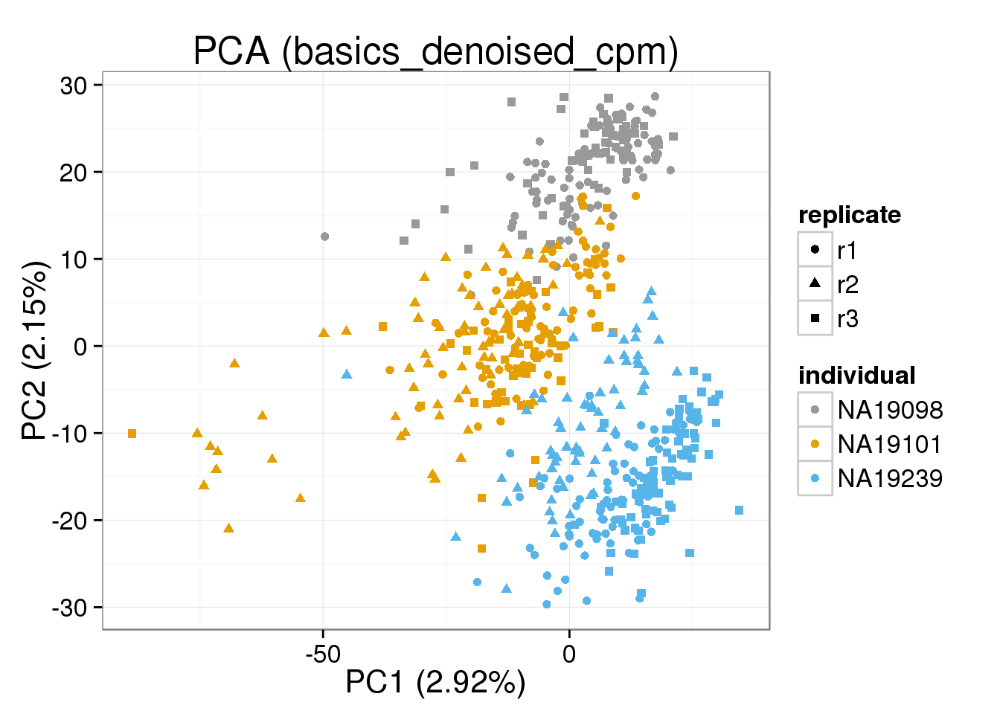
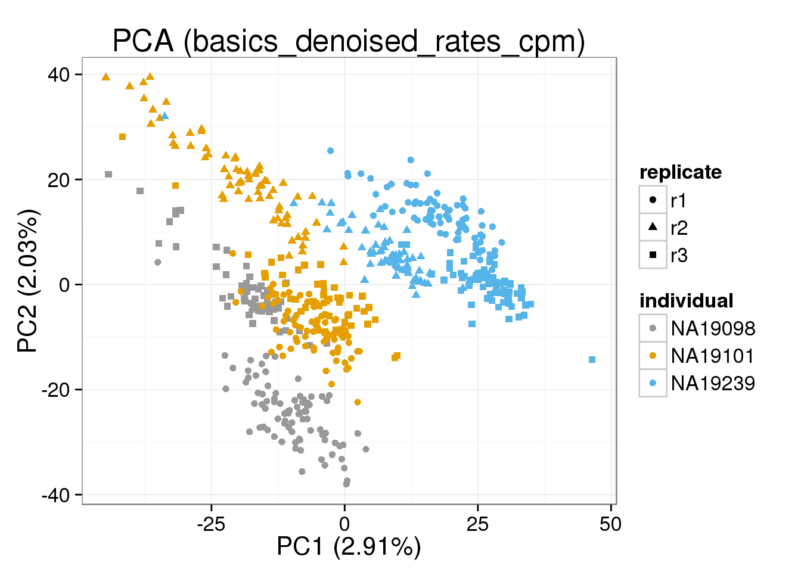
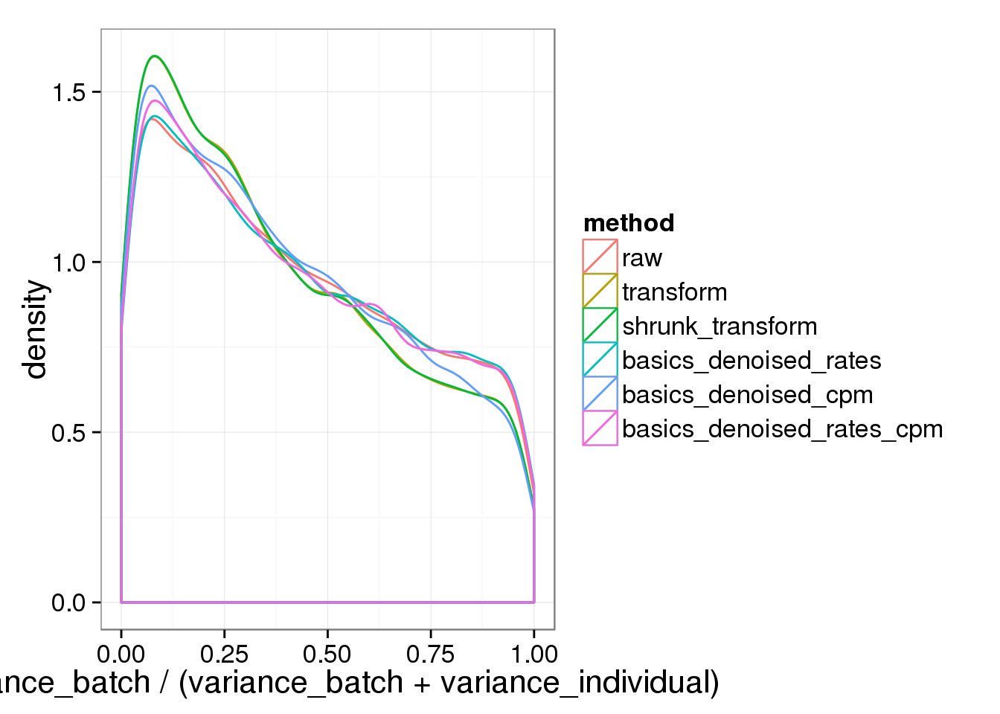
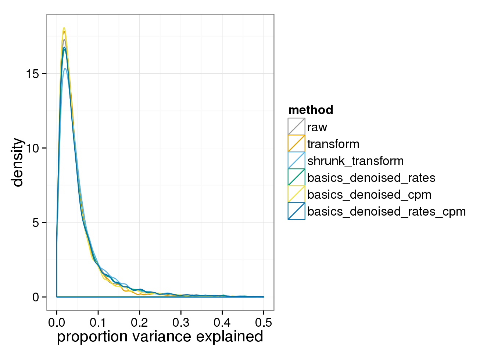

Last updated: 2015-11-11
Code version: 48d0a820ba6794f241a52faf89a214afeba506d9
source("functions.R")
library("ggplot2")
theme_set(theme_bw(base_size = 16))
library("edgeR")
require(doMC)Below is the description of the data from the BASiCS vignette, interspersed with my code to load the data.
The input dataset for BASiCS must contain the following 3 elements:
Counts: a matrix of raw expression counts with dimensions q times n. First q0 rows must correspond to biological genes. Last q − q0 rows must correspond to technical spike-in genes.
Input annotation.
anno_filter <- read.table("../data/annotation-filter.txt", header = TRUE,
stringsAsFactors = FALSE)Input molecule counts.
molecules_cpm = read.table("../data/molecules-cpm.txt", header = TRUE, stringsAsFactors = FALSE)
molecules_cpm_trans = read.table("../data/molecules-cpm-trans.txt", header = TRUE, stringsAsFactors = FALSE)
molecules_cpm_trans_shrunk = read.table("../data/molecules-cpm-trans-shrunk.txt", header = TRUE, stringsAsFactors = FALSE)Remove outlier batch NA19098.r2.
tokeep=anno_filter$batch != "NA19098.r2"
anno_filter <- anno_filter[tokeep, ]
molecules_cpm <- molecules_cpm[,tokeep]
molecules_cpm_trans <- molecules_cpm_trans[,tokeep]
molecules_cpm_trans_shrunk <- molecules_cpm_trans_shrunk[,tokeep]Remove technical noise
denoised <- read.table("../data/basics-denoised.txt", header = TRUE,
stringsAsFactors = FALSE)
denoised_rates <- read.table("../data/basics-denoised-rates.txt", header = TRUE,
stringsAsFactors = FALSE)Both the raw and the cpm versions of the BASiCS denoised data appear similar to the result with the non-normalized cpm data. This does not change substantially when increasing the iterations from a few thousands to a few tens of thousands.
denoised_cpm <- cpm(denoised, log = TRUE,
lib.size = colSums(denoised) *
calcNormFactors(denoised, method = "TMM"))
denoised_rates_cpm <- cpm(denoised_rates, log = TRUE,
lib.size = colSums(denoised_rates) *
calcNormFactors(denoised_rates, method = "TMM"))cbPalette <- c("#999999", "#E69F00", "#56B4E9", "#009E73", "#F0E442", "#0072B2", "#D55E00", "#CC79A7")
make_pca_plot <- function(x) {
pca_res <- run_pca(x)
plot_pca(pca_res$PCs, explained = pca_res$explained,
metadata = anno_filter, color = "individual",
shape = "replicate")
}
cpm_mats <- list( raw=molecules_cpm, transform=molecules_cpm_trans, shrunk_transform=molecules_cpm_trans_shrunk, basics_denoised_rates=log(denoised_rates), basics_denoised_cpm=denoised_cpm, basics_denoised_rates_cpm=denoised_rates_cpm)
cpm_mats <- lapply(cpm_mats, as.matrix)
common_genes=Reduce(intersect, lapply(cpm_mats,rownames))
common_cells=Reduce(intersect, lapply(cpm_mats,colnames))
cpm_mats <- lapply(cpm_mats, function(g) g[common_genes,common_cells])
rownames(anno_filter)=anno_filter$sample_id
anno_filter=anno_filter[common_cells,]
foreach(n=names(cpm_mats)) %do%
{ make_pca_plot(cpm_mats[[n]]) + labs(title=paste0("PCA (",n,")")) + scale_colour_manual(values=cbPalette) }[[1]]
[[2]]
[[3]]
[[4]]
[[5]]
[[6]]
Next look at whether the batch and individual effects are more or less significant under the different normalization approaches using a per gene ANOVA.
anovas <- lapply(cpm_mats, function(x) {
foreach(i=1:nrow(x)) %dopar% anova(lm(x[i,] ~ anno_filter$replicate + anno_filter$individual))
})
variance_components <- lapply( as.list(names(anovas)), function(name) {
ss=do.call(rbind,foreach(a=anovas[[name]]) %do% a[,"Sum Sq"] )
colnames(ss)=c("batch","individual","residual")
data.frame(sweep(ss,1,rowSums(ss),"/"), method=name)
} )
names(variance_components)=names(cpm_mats)
batch_over_explained <- lapply( as.list(names(anovas)), function(name) {
ss=do.call(rbind,foreach(a=anovas[[name]]) %do% a[1:2,"Sum Sq"] )
colnames(ss)=c("batch","individual")
data.frame( prop_batch=ss[,"batch"] / rowSums(ss), method=name)
} )
names(batch_over_explained) = names(cpm_mats)The histogram of the proportion explained by batch.
ggplot( do.call(rbind,batch_over_explained), aes(prop_batch,col=method)) + geom_density() + xlab("variance_batch / (variance_batch + variance_individual)")
And the proportion of variance explained by either batch or individual.
ggplot( do.call(rbind,variance_components), aes(1-residual,col=method)) + geom_density() + xlab("proportion variance explained") + xlim(0,.5)+ scale_colour_manual(values=cbPalette)Warning: Removed 25 rows containing non-finite values (stat_density).Warning: Removed 15 rows containing non-finite values (stat_density).Warning: Removed 25 rows containing non-finite values (stat_density).Warning: Removed 29 rows containing non-finite values (stat_density).Warning: Removed 26 rows containing non-finite values (stat_density).Warning: Removed 28 rows containing non-finite values (stat_density).
Any version of the BASICS normalized data behaves basically (sic) like the raw data.
sessionInfo()R version 3.2.0 (2015-04-16)
Platform: x86_64-unknown-linux-gnu (64-bit)
locale:
[1] LC_CTYPE=en_US.UTF-8 LC_NUMERIC=C
[3] LC_TIME=en_US.UTF-8 LC_COLLATE=en_US.UTF-8
[5] LC_MONETARY=en_US.UTF-8 LC_MESSAGES=en_US.UTF-8
[7] LC_PAPER=en_US.UTF-8 LC_NAME=C
[9] LC_ADDRESS=C LC_TELEPHONE=C
[11] LC_MEASUREMENT=en_US.UTF-8 LC_IDENTIFICATION=C
attached base packages:
[1] parallel grid stats graphics grDevices utils datasets
[8] methods base
other attached packages:
[1] mgcv_1.8-6 nlme_3.1-120 testit_0.4 hexbin_1.27.0
[5] doMC_1.3.4 iterators_1.0.7 foreach_1.4.2 rstan_2.8.0
[9] Rcpp_0.12.0 ggplot2_1.0.1 edgeR_3.10.2 limma_3.24.9
[13] dplyr_0.4.2 data.table_1.9.4 biomaRt_2.24.0 knitr_1.10.5
[17] rmarkdown_0.6.1
loaded via a namespace (and not attached):
[1] compiler_3.2.0 formatR_1.2 GenomeInfoDb_1.4.0
[4] plyr_1.8.3 bitops_1.0-6 tools_3.2.0
[7] digest_0.6.8 lattice_0.20-31 RSQLite_1.0.0
[10] evaluate_0.7 gtable_0.1.2 Matrix_1.2-1
[13] DBI_0.3.1 yaml_2.1.13 proto_0.3-10
[16] gridExtra_2.0.0 httr_0.6.1 stringr_1.0.0
[19] S4Vectors_0.6.0 IRanges_2.2.4 stats4_3.2.0
[22] inline_0.3.14 Biobase_2.28.0 R6_2.1.1
[25] AnnotationDbi_1.30.1 XML_3.98-1.2 reshape2_1.4.1
[28] magrittr_1.5 codetools_0.2-11 scales_0.2.4
[31] htmltools_0.2.6 BiocGenerics_0.14.0 MASS_7.3-40
[34] assertthat_0.1 colorspace_1.2-6 labeling_0.3
[37] stringi_0.4-1 lazyeval_0.1.10 RCurl_1.95-4.6
[40] munsell_0.4.2 chron_2.3-45